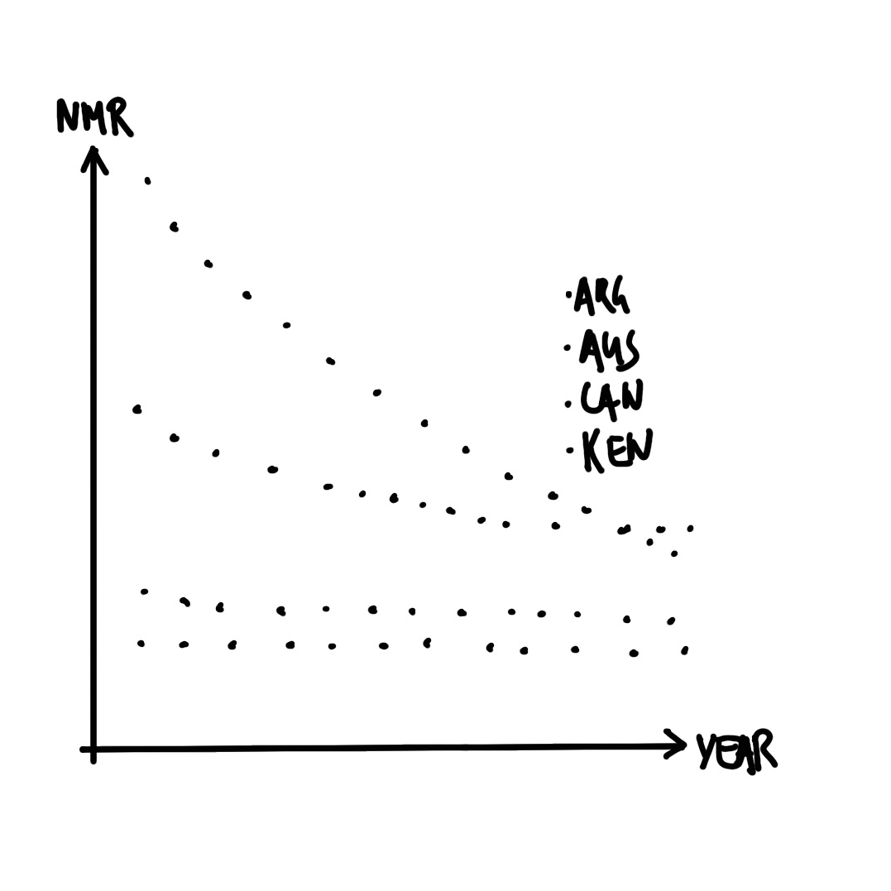

library("janitor")
library("knitr")
library("lubridate")
library("opendatatoronto")
library("tidyverse")
library("here")Drinking from the Firehose – Data Analysis Workflow
SOCI 3040 – Quantitative Research Methods
Reading Assignment
Lecture Slides
Class / Lab Notes
1 Third Example
1.1 import libraries
2 Neonatal Mortality Rates
Neonatal mortality refers to a death that occurs within the first month of life. The neonatal mortality rate (NMR) is the number of neonatal deaths per 1,000 live births (UN IGME 2021). The Third Sustainable Development Goal (SDG) calls for a reduction in NMR to 12. In this example we will create a graph of the estimated NMR for the past 50 years for: Argentina, Australia, Canada, and Kenya.
3 Plan
Neonatal Mortality Rates (NMR)
3.1 plan
The dataset needs to have variables that specify the country and the year. It also needs to have a variable with the NMR estimate for that year for that country. Roughly, it should look like Figure 1 (a) (next slide). We are interested to make a graph with year on the x-axis and estimated NMR on the y-axis. Each country should have its own series. A quick sketch of what we are looking for is Figure 1 (b) (next slide).
3.2 plan

4 Simulate
Neonatal Mortality Rates (NMR)
4.1 simulate
To simulate some data that aligns with our plan, we will need three columns:
country,year, andNMR. We can do this by repeating the name of each country 50 times withrep(), and enabling the passing of 50 years. Then we draw from the uniform distribution withrunif()to simulate an estimated NMR value for that year for that country.
4.2 simulate
set.seed(853)
simulated_nmr_data <-
tibble(
country =
c(
rep("Argentina", 50), rep("Australia", 50),
rep("Canada", 50), rep("Kenya", 50)
),
year =
rep(c(1971:2020), 4),
nmr =
runif(n = 200, min = 0, max = 100)
)
head(simulated_nmr_data)# A tibble: 6 × 3
country year nmr
<chr> <int> <dbl>
1 Argentina 1971 35.9
2 Argentina 1972 12.0
3 Argentina 1973 48.4
4 Argentina 1974 31.6
5 Argentina 1975 3.74
6 Argentina 1976 40.4 4.3 simulate
While this simulation works, it would be time consuming and error prone if we decided that instead of 50 years, we were interested in simulating, say, 60 years. One way to improve this code is to replace all instances of 50 with a variable.
4.4 simulate
set.seed(853)
number_of_years <- 50
simulated_nmr_data <-
tibble(
country =
c(
rep("Argentina", number_of_years), rep("Australia", number_of_years),
rep("Canada", number_of_years), rep("Kenya", number_of_years)
),
year =
rep(c(1:number_of_years + 1970), 4),
nmr =
runif(n = number_of_years * 4, min = 0, max = 100)
)
head(simulated_nmr_data)# A tibble: 6 × 3
country year nmr
<chr> <dbl> <dbl>
1 Argentina 1971 35.9
2 Argentina 1972 12.0
3 Argentina 1973 48.4
4 Argentina 1974 31.6
5 Argentina 1975 3.74
6 Argentina 1976 40.4 The result will be the same, but now if we want to change from 50 to 60 years, we only have to make the change in one place.
4.5 simulate
We can have confidence in this simulated dataset because it is relatively straight forward, and we wrote the code for it. But when we turn to the real dataset, it is more difficult to be sure that it is what it claims to be. Even if we trust the data, we need to be able to share that confidence with others. One way forward is to establish some tests of whether our data are as they should be. For instance, we expect:
- That “country” is exclusively one of these four: “Argentina”, “Australia”, “Canada”, or “Kenya”.
- Conversely, “country” contains all those four countries.
- That “year” is no smaller than 1971 and no larger than 2020, and is an integer, not a letter or a number with decimal places.
- That “nmr” is a value somewhere between 0 and 1,000, and is a number.
We can write a series of tests based on these features, that we expect the dataset to pass.
4.6 simulate
simulated_nmr_data$country |>
unique() == c("Argentina", "Australia", "Canada", "Kenya")[1] TRUE TRUE TRUE TRUEsimulated_nmr_data$country |>
unique() |>
length() == 4[1] TRUEsimulated_nmr_data$year |> min() == 1971[1] TRUEsimulated_nmr_data$year |> max() == 2020[1] TRUEsimulated_nmr_data$nmr |> min() >= 0[1] TRUEsimulated_nmr_data$nmr |> max() <= 1000[1] TRUEsimulated_nmr_data$nmr |> class() == "numeric"[1] TRUE4.7 simulate
Having passed these tests, we can have confidence in the simulated dataset. More importantly, we can apply these tests to the real dataset. This enables us to have greater confidence in that dataset and to share that confidence with others.
5 Acquire
Neonatal Mortality Rates (NMR)
5.1
The UN Inter-agency Group for Child Mortality Estimation (IGME) provides NMR estimates that we can download and save.
igme_data_path <- here("data", "igme.csv")
igme_data_path[1] "/Users/johnmclevey/Projects/SOCI3040/data/igme.csv"raw_igme_data <-
read_csv(
file =
"https://childmortality.org/wp-content/uploads/2021/09/UNIGME-2021.csv",
show_col_types = FALSE
)
write_csv(x = raw_igme_data, file = igme_data_path)5.2
raw_igme_data <-
read_csv(
file = igme_data_path,
show_col_types = FALSE
)5.3
With established data, such as this, it can be useful to read supporting material about the data. In this case, a codebook is available here. After this we can take a quick look at the dataset to get a better sense of it. We might be interested in what the dataset looks like with head() and tail()
head(raw_igme_data)# A tibble: 6 × 29
`Geographic area` Indicator Sex `Wealth Quintile` `Series Name`
<chr> <chr> <chr> <chr> <chr>
1 Afghanistan Neonatal mortality ra… Total Total Multiple Ind…
2 Afghanistan Neonatal mortality ra… Total Total Multiple Ind…
3 Afghanistan Neonatal mortality ra… Total Total Multiple Ind…
4 Afghanistan Neonatal mortality ra… Total Total Multiple Ind…
5 Afghanistan Neonatal mortality ra… Total Total Multiple Ind…
6 Afghanistan Neonatal mortality ra… Total Total Afghanistan …
# ℹ 24 more variables: `Series Year` <chr>, `Regional group` <chr>,
# TIME_PERIOD <chr>, OBS_VALUE <dbl>, COUNTRY_NOTES <chr>, CONNECTION <lgl>,
# DEATH_CATEGORY <lgl>, CATEGORY <chr>, `Observation Status` <chr>,
# `Unit of measure` <chr>, `Series Category` <chr>, `Series Type` <chr>,
# STD_ERR <dbl>, REF_DATE <dbl>, `Age Group of Women` <chr>,
# `Time Since First Birth` <chr>, DEFINITION <chr>, INTERVAL <dbl>,
# `Series Method` <chr>, LOWER_BOUND <dbl>, UPPER_BOUND <dbl>, …5.4
and what the names of the columns are with names()
names(raw_igme_data) [1] "Geographic area" "Indicator" "Sex"
[4] "Wealth Quintile" "Series Name" "Series Year"
[7] "Regional group" "TIME_PERIOD" "OBS_VALUE"
[10] "COUNTRY_NOTES" "CONNECTION" "DEATH_CATEGORY"
[13] "CATEGORY" "Observation Status" "Unit of measure"
[16] "Series Category" "Series Type" "STD_ERR"
[19] "REF_DATE" "Age Group of Women" "Time Since First Birth"
[22] "DEFINITION" "INTERVAL" "Series Method"
[25] "LOWER_BOUND" "UPPER_BOUND" "STATUS"
[28] "YEAR_TO_ACHIEVE" "Model Used" 5.5
We would like to clean up the names and only keep the rows and columns that we are interested in. Based on our plan, we are interested in rows where “Sex” is “Total”, “Series Name” is “UN IGME estimate”, “Geographic area” is one of “Argentina”, “Australia”, “Canada”, and “Kenya”, and the “Indicator” is “Neonatal mortality rate”. After this we are interested in just a few columns: “geographic_area”, “time_period”, and “obs_value”.
5.6
cleaned_igme_data <-
clean_names(raw_igme_data) |>
filter(
sex == "Total",
series_name == "UN IGME estimate",
geographic_area %in% c("Argentina", "Australia", "Canada", "Kenya"),
indicator == "Neonatal mortality rate"
) |>
select(geographic_area, time_period, obs_value)
head(cleaned_igme_data)# A tibble: 6 × 3
geographic_area time_period obs_value
<chr> <chr> <dbl>
1 Argentina 1970-06 24.9
2 Argentina 1971-06 24.7
3 Argentina 1972-06 24.6
4 Argentina 1973-06 24.6
5 Argentina 1974-06 24.5
6 Argentina 1975-06 24.15.7
We need to fix two other aspects: the class of “time_period” is character when we need it to be a year, and the name of “obs_value” should be “nmr” to be more informative.
5.8
cleaned_igme_data <-
cleaned_igme_data |>
mutate(
time_period = str_remove(time_period, "-06"),
time_period = as.integer(time_period)
) |>
filter(time_period >= 1971) |>
rename(nmr = obs_value, year = time_period, country = geographic_area)
head(cleaned_igme_data)# A tibble: 6 × 3
country year nmr
<chr> <int> <dbl>
1 Argentina 1971 24.7
2 Argentina 1972 24.6
3 Argentina 1973 24.6
4 Argentina 1974 24.5
5 Argentina 1975 24.1
6 Argentina 1976 23.35.9
Finally, we can check that our dataset passes the tests that we developed based on the simulated dataset.
5.10
cleaned_igme_data$country |>
unique() == c("Argentina", "Australia", "Canada", "Kenya")[1] TRUE TRUE TRUE TRUEcleaned_igme_data$country |>
unique() |>
length() == 4[1] TRUEcleaned_igme_data$year |> min() == 1971[1] TRUEcleaned_igme_data$year |> max() == 2020[1] TRUEcleaned_igme_data$nmr |> min() >= 0[1] TRUEcleaned_igme_data$nmr |> max() <= 1000[1] TRUEcleaned_igme_data$nmr |> class() == "numeric"[1] TRUE5.11
All that remains is to save the nicely cleaned dataset.
cleaned_igme_data_path <- here("data", "cleaned_igme_data.csv")
write_csv(x = cleaned_igme_data, file = cleaned_igme_data_path)6 Explore/Understand
Neonatal Mortality Rates (NMR)
6.1
We would like to make a graph of estimated NMR using the cleaned dataset. First, we read in the dataset.
cleaned_igme_data <-
read_csv(
here("data", "cleaned_igme_data.csv"),
show_col_types = FALSE
)6.2
We can now make a graph of how NMR has changed over time and the differences between countries (Figure 2).
cleaned_igme_data |>
ggplot(aes(x = year, y = nmr, color = country)) +
geom_point() +
theme_minimal() +
labs(x = "Year", y = "Neonatal Mortality Rate (NMR)", color = "Country") +
scale_color_brewer(palette = "Set1") +
theme(legend.position = "bottom")
8 Wrap Up
We have covered much ground in this chapter, and it is normal to have not followed it all. The best way to proceed is to go through each of the three case studies in your own time. Type all the code out yourself, rather than copy-pasting, and run it bit by bit, even if you do not entirely understand what it is doing. Then try to add your own comments to it.
It is also the case that it is not necessary to fully understand everything in this chapter at this point. Some students find it best to continue going through the next few chapters of this book, and return to this one later.
9 Your Turn
Lab Exercise
References
Alexander, Rohan. 2023. Telling Stories with Data: With Applications in R. Chapman; Hall/CRC.
R Core Team. 2023. R: A Language and Environment for Statistical Computing. Vienna, Austria: R Foundation for Statistical Computing. https://www.R-project.org/.
UN IGME. 2021. “Levels and Trends in Child Mortality, 2021.” https://childmortality.org/wp-content/uploads/2021/12/UNICEF-2021-Child-Mortality-Report.pdf.